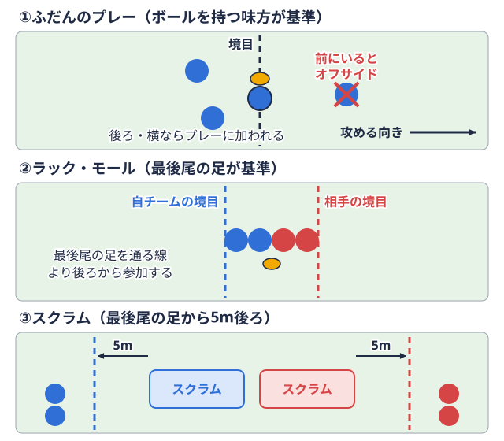

技術 2026-11-25
ラグビーのハイボールキャッチ練習のコツ｜構え・落下点・競り合いのルール
相手の高いキックを落としてしまい、そのままピンチになる。あるいは、競り合いで相手と交錯して笛を吹かれる。ハイボールの場面は、短い時間に「どこで捕るか」「跳ぶか、地面で受けるか」「相手との接触をどう避けるか」を同時に決める必要があり、苦手意識を持つ部員が多い場面ではないでしょうか。フルバック15番のポジション。最後方で守りの最後の砦となり、相手のキックを処理して攻め返す。 用語辞典で見るやウイング11番・14番のポジション。グラウンドの両端に立ち、走ってトライを狙うことが多い。用語辞典で見るだけでなく、スクラムハーフ9番のポジション。人が固まった場所からボールを取り出し、味方へパスして攻撃を始める。用語辞典で見るやスタンドオフ10番のポジション。9番からボールを受け、パス・キック・走りのどれで攻めるかを選ぶ司令塔。用語辞典で見る、フォワード背番号1〜8番の8人。スクラムを組み、体をぶつけてボールを確保するのが主な役目。用語辞典で見るも、キックオフや守備のカバーで空中のボールを処理する場面があります。
用語辞典で見るやウイング11番・14番のポジション。グラウンドの両端に立ち、走ってトライを狙うことが多い。用語辞典で見るだけでなく、スクラムハーフ9番のポジション。人が固まった場所からボールを取り出し、味方へパスして攻撃を始める。用語辞典で見るやスタンドオフ10番のポジション。9番からボールを受け、パス・キック・走りのどれで攻めるかを選ぶ司令塔。用語辞典で見る、フォワード背番号1〜8番の8人。スクラムを組み、体をぶつけてボールを確保するのが主な役目。用語辞典で見るも、キックオフや守備のカバーで空中のボールを処理する場面があります。
この記事では、民間のコーチング資料に共通して紹介されている捕球の考え方と、World Rugby（ワールドラグビー）の競技規則（英語版）で確認できた内容を組み合わせて、ハイボールキャッチの構え、落下点への入り方、競り合いで気をつけたいルール、練習の段階を整理します。
なお、ここで紹介するコーチング上のポイントは、sportplan.net や scrumhalfconnection.com など英語のコーチング資料に書かれている一般的な考え方をまとめたものです。所属チームの監督・コーチの指導方針が優先されます。競技規則も改正されることがあるため、条項番号は World Rugby の英語版に基づくものとし、日本の大会での扱いは日本ラグビーフットボール協会（JRFU）の競技規則と大会要項で確認してください。
ハイボールキャッチは「準備」「捕る」「次の動作」の3段階で考える
捕る瞬間の手の形に注目しがちですが、コーチング資料では、捕る前の動きと捕ったあとの動作を含めて流れで説明されています。この記事では次の3段階に分けて整理します。
| 段階 | 主なポイント | 練習で確認したいこと |
|---|---|---|
| 準備 | 落下点を読む、声を出す、頭と目を上げる | 蹴られた瞬間の第一歩、味方との声かけ |
| 捕る | 手を上げて構える、体の向き、胸に引き寄せる | 地面で捕るか、跳んで捕るかの判断 |
| 次の動作 | 着地、衝撃への備え、パス・キック・ランの選択 | 捕ったあとの1歩目と周囲の確認 |
捕球だけを切り出して練習すると、試合で相手や風、味方の位置が加わったときに崩れやすくなります。後述するように、練習は条件を少しずつ増やしていく順番が紹介されています。
準備：落下点に入るまでにすること
頭と目を上げ、ボールから目を離さない
sportplan.net のハイボール練習のページには、コーチングポイントとして、ボールを呼ぶこと、頭と目を上げてボールを追うこと、落下点に合わせて素早く動くこと、手を上げて構えること、が挙げられています。まず「ボールから目を離さない」という基本が出発点です。
実際の試合では、相手のキッカーや追ってくる選手も視野に入ります。ただし、ボールを見失うとその時点で落下点の修正ができなくなります。周囲の確認は、ボールが空中にある間に視線を一瞬動かす程度にとどめ、捕る直前はボールに集中する、という考え方が一般的です。
声を出して役割をはっきりさせる
scrumhalfconnection.com のキャッチの解説でも、ボールを呼ぶ声の例が紹介されています。誰が捕るのかが曖昧だと、2人が同時に落下点へ入って衝突したり、お互いに譲ってしまってボールが地面に落ちたりすることがあります。
声のかけ方はチームごとに決めておくとよいでしょう。たとえば次のような取り決めです。
- 捕る選手が「マイン」など決まった言葉で宣言する
- 後ろの選手の声を優先する、あるいは最後尾のフルバックの声を優先するなど、優先順位を決めておく
- 声を出せない状況（観客の声が大きい、風が強いなど）に備えて、手のサインも決めておく
上のような例は編集部が組み立てた一例で、特定のチームの実践例ではありません。チームの方針に合わせて決めてください。
落下点へは「走り込む」意識で入る
資料に共通するのは、落下点に「待って入る」のではなく、動きながらボールに合わせていく考え方です。止まって待つと、相手に先に落下点へ入られたり、ボールが予想より伸びたときに対応できなかったりします。sportplan.net には、ボールを走りながら捕る練習（Catching the high ball on the move）も紹介されています。
風の影響も考えておきましょう。向かい風ではボールが戻されて手前に落ちやすく、追い風では伸びやすいと一般的に言われます。ただし実際の軌道はキックの種類や回転によって変わるため、試合前のウォームアップで蹴られたボールの軌道を確認しておくと、落下点の読みに役立ちます。
捕る：構え・体の向き・衝撃の吸収
手の構えと肘
scrumhalfconnection.com の解説では、肘を軽く曲げ、両手を照準のように構えて、体の前でボールを迎える姿勢が紹介されています。手を上げて親指を近づけた形（アルファベットの W に見える形）が挙げられているコーチング資料もあります。ボールを迎える手を早めに上げておくと、パサーやキッカーに合わせやすく、捕ったあとの動作に移りやすい、と説明されています。
横向き（サイドオン）の体の向き
sportplan.net の High Kick Catching の解説では、体を横向きにして構えると、ボールを落としてもノックオンボールを手や腕に当てて前に落とす反則。うっかりの場合は、相手ボールのスクラムで再開する。用語辞典で見る（前に落とす反則）になりにくい、という趣旨が書かれています。競技規則で見ると、ノックオンは World Rugby の Law 11（Knock forward or throw forward）で扱われており、11.1 では、ノックフォワード（日本語では「ノックオン」と呼ばれることが多い反則）の罰則はスクラム試合が止まったあとの再開方法。両チーム8人ずつが体を組み合わせて向かい合い、間に入れたボールを足で奪い合う。 用語辞典で見るとされています。
用語辞典で見るとされています。
また、Law 11.4 には、ボールを捕ろうとしてノックフォワードになった場合、「ボールを確保できると合理的に期待できる状況」だったときは意図的な反則にはならない、という趣旨の規定があります。意図的に前へ叩いた場合は 11.3 でペナルティ反則への罰。反則を受けたチームがその場から再開でき、ゴールを狙って成功すれば3点が入る。 用語辞典で見るになります。ハイボールを捕りに行って落とした場合は、通常はスクラムによる再開です。
用語辞典で見るになります。ハイボールを捕りに行って落とした場合は、通常はスクラムによる再開です。
ここで注意したいのは、横向きにすればノックオンを避けられる、という単純な話ではない点です。体の向きは、落とした場合にボールが後ろへ転がりやすい姿勢を作る一つの工夫として紹介されているにすぎません。相手のキッカーの位置や、味方の守備ラインの並び方によっては、正面を向いて捕るほうが次のプレーに移りやすい場面もあります。
胸に引き寄せて衝撃を吸収する
コーチング資料では、捕る瞬間にボールを体に引き寄せてクッションにする、という説明が見られます。腕だけで受けるとボールの勢いに負けて弾いてしまうことがあるため、手で受けた直後に胸まで引き寄せる、という流れです。
地面で捕るか、跳んで捕るか
sportplan.net の「Catching a high ball」では、相手が近づいてくるときに、胸の高さで受けるのか、跳んで空中で受けるのかを、相手との距離を見て判断することが挙げられています。同じページには、着地で足を広げて安定させ、接触に備える、といった内容も書かれています。跳ぶ場合は、跳ぶタイミングと、着地までを一連の動きとして練習しておくとよいでしょう。
競り合いで知っておきたい競技規則
ハイボールの競り合いは、空中に人がいる状況で起きる接触が多く、反則の重さも大きくなりがちです。次に挙げるのは、World Rugby の競技規則のうち、競り合いの場面に関わるものを要約したものです。
| 条文 | 内容の要約 | 反則の場合 |
|---|---|---|
| 9.17 | 足が地面から離れている相手を、タックルボールを持つ相手をつかんで地面に倒すプレー。倒したあとは、すぐにボールから離れなければならない。用語辞典で見る・チャージ・引く・押す・つかむことはできない | ペナルティ |
| 9.25 | 蹴った直後の相手を、意図的にチャージ・妨害・遅れてタックルすることはできない | ペナルティ（相手チームが再開位置を選ぶ） |
| 9.11 | 他の選手に対して無謀または危険なことをしてはならない（肘や前腕を突き出す、タックラーの上や中に飛び込むなど） | ペナルティ |
| 9.4 | ボールをプレーする機会を、競り合う以外の方法で意図的に妨げることはできない | ペナルティ |
| 9.26 | オープンプレーでは味方を持ち上げたり支えたりできるが、どちらかのチームがボールを確保したら安全に下ろす必要がある | フリーキック |
反則の種類や、ペナルティとフリーキックの違いは、ラグビーの反則の種類｜ペナルティとフリーキックの違いと再開方法で整理しています。ここでは、ハイボールの場面に絞って、練習で意識したい点を挙げます。
空中にいる相手に触れない（9.17）
9.17 は、足が地面から離れている相手を、タックルしたり、押したり、つかんだりすることを禁じています。ハイボールで相手が跳んでいる間は、その相手の体に手を出さない、という意識が練習の前提になります。相手が着地してから、通常のタックルの基本に沿って対応することになります。タックルの基本はラグビーのタックル練習とコツにまとめています。
跳んで捕る側にとっても、自分が空中にいる間は相手から守られる、という関係を理解しておくと、思い切って跳びやすくなる面があります。ただし、これは「反則なら笛が鳴る」というルール上の話であり、実際に空中で接触を受けて怪我をする危険がなくなるわけではありません。
蹴った直後の選手への接触（9.25）
自分がキックした直後の選手に対して、相手が意図的にチャージしたり、遅れてタックルしたりすることは、9.25 で禁じられています。キッカーにとっては、蹴ったあとに無防備な状態になりやすい点を守ってくれる規定です。逆に、自分が相手のキッカーを追う立場では、蹴った直後に当たりに行かないよう、追走のタイミングを練習で確認しておく必要があります。
競り合う権利と、妨害の違い（9.4）
9.4 は、ボールをプレーする機会を、「競り合う以外の方法」で妨げることを禁じています。ボールに向かって競り合うことは認められますが、競り合うのではなく、相手の進路をふさぐだけの動きは反則になり得ます。
持ち上げて競る場合の扱い（9.26）
オープンプレーでは、味方を持ち上げたり支えたりすること自体は認められています。ただし、9.26 では、どちらかのチームがボールを確保したら、持ち上げた選手を安全に下ろす必要があるとされ、反則の場合はフリーキックです。ハイボールの競り合いで味方を持ち上げる戦術を使う場合は、確保後の下ろし方まで含めて、監督・コーチの指導のもとで練習してください。
オフサイドとの関係（第10条）
自チームがキックした場面では、10.1 により、蹴った足がオフサイドラインオフサイドにならずにプレーに加われる境目の線。場面ごとに位置が決まっている。 
キックを追って走る選手は、蹴られたボールを追い越していないかを意識する必要があります。捕る側にとっては、相手の追走者がオフサイドボールを持つ、または最後に触れた味方より前にいる状態でプレーに加わる反則。用語辞典で見るになっていれば、捕る場所に余裕が生まれる可能性があります。ただし、試合中にその場でオフサイドを判断するのは難しいため、あくまでレフリーの笛を待つ、というのが基本です。
練習の組み立て方（段階表）
以下は、sportplan.net や scrumhalfconnection.com に紹介されている段階的な練習の考え方を参考に、編集部が整理した例です。特定のチームの実践例ではありません。チームの練習日程や体の状態に合わせて調整してください。
| 段階 | 内容 | 確認すること |
|---|---|---|
| 1 | 自分で投げ上げて捕る（止まった状態） | 手の構え、胸への引き寄せ |
| 2 | ペアで投げてもらい、助走をつけて捕る | 落下点への入り方、声かけ |
| 3 | 投げ手が回転や高さを変える | 不規則なボールへの対応 |
| 4 | 蹴ったボールを捕る（コーチや味方が蹴る） | 風や回転を含めた落下点の読み |
| 5 | 競り合う相手を置いて捕る（接触を抑えた形で） | 跳ぶか、地面で捕るかの判断 |
| 6 | 疲労した状態、制限時間付きで行う | 精度が落ちる条件の把握 |
sportplan.net の Attack the Catch のページには、捕球の基本動作を自動化したうえで、ディフェンダーや時間制限を加えて圧力をかける、という考え方が紹介されています。圧力のない状況でできることが、試合のプレッシャーの中でそのまま再現できるとは限らないため、段階を進めるときは前の段階に戻れる余裕を持たせておくと安全です。
また、段階5以降は、空中での接触や着地のリスクが高まります。必ず監督・コーチ、トレーナーの管理のもとで、人数・距離・強度を決めて行ってください。頭部への衝撃があった場合の対応はラグビーの脳震盪対応と段階的競技復帰を、首まわりの強化はラグビーの首の強化と怪我予防を参考にしてください。
練習ノートに残す項目
捕球の成功・失敗の数だけでなく、「どの条件で落としたか」を書いておくと、課題が見えやすくなります。
- ボールの種類（高く上がるキック、低く伸びるキック、回転が不規則なキックなど）
- 風向きと強さの感覚
- 味方・相手の位置、競り合いの有無
- 捕った後の次の動作（パス、キック、ラン）が選べたか
- 落とした場合の原因（目を切った、落下点を誤った、手の構えが遅れたなど）
数字は、他の選手と比べるためではなく、自分の傾向を知るために使います。
ポジション別・場面別の考え方
ハイボールを処理する機会はポジションによって異なります。ここでは役割ごとの特徴を、既存の解説記事とあわせて整理します。
- フルバック：最後尾で相手のキックを処理する機会が多いポジションです。World Rugby Passport のフルバックの機能的役割分析にも、空中でボールを確実にキャッチすることが挙げられています。詳しくはラグビーのフルバックの役割をご覧ください。
- ウイング：外側で相手のキックに対応し、フルバックと立ち位置を分担します。ラグビーのウイングの役割と練習で、役割と練習の考え方を扱っています。
- スタンドオフ・スクラムハーフ：守備では前線に立つことが多いものの、相手のキックの落下点が近くなる場面があります。蹴る側の技術はラグビーのキックの種類と練習法で扱っています。
- フォワード：キックオフなど、競り合いの場面に関わることがあります。ラインアウトボールが横のライン（タッチライン）の外に出たあとの再開方法。2列に並び、投げ入れたボールを取り合う。
 用語辞典で見るの空中戦は別の技術で、ロックのラインアウトとスクラムなどで扱っています。
用語辞典で見るの空中戦は別の技術で、ロックのラインアウトとスクラムなどで扱っています。
ポジション全体の役割はラグビーのポジション一覧と役割を解説で確認できます。用語に迷ったときはラグビー用語集（初心者向け）も参考にしてください。
自分のリーグ・対戦相手を確認して試合に備える
相手チームのキックの傾向は、試合の準備に関わります。まず自分たちの所属リーグと、対戦相手の位置づけを確認しておくと、見通しが立ちやすくなります。
- 関東大学対抗戦関東の大学ラグビーの大会区分の一つ。Aグループ・Bグループに分かれて戦う。用語辞典で見るAグループ：順位表、大学一覧
- 関東大学リーグ戦関東の大学ラグビーのもう一つの大会区分。1部・2部など「部」に分かれて戦う。用語辞典で見る1部：順位表
- 関西Aリーグ：順位表
- 九州Aリーグ：順位表
順位表だけでは相手のキックの癖までは分かりません。試合映像や自チームのアナリスト・学生コーチの分析と組み合わせて、相手の蹴る場所や種類を確認してください。観戦の入り口は大学ラグビーの観戦ガイドにまとめています。
まとめ
ハイボールキャッチは、落下点への入り方、手の構えと体の向き、捕ったあとの動作を、流れで練習することが基本になります。競り合いでは、World Rugby の競技規則で、足が地面から離れた相手に触れること（9.17）や、蹴った直後の選手への接触（9.25）などが反則として定められています。ノックオンは、通常はスクラムによる再開（11.1）ですが、意図的に前へ叩いた場合はペナルティ（11.3）になります。
練習は、止まった状態から始めて、助走、ボールの回転の変化、競り合い、疲労の順に条件を増やし、練習ノートに落とした条件を残していくと、課題を見つけやすくなります。条文は改正されることがあるため、最新の競技規則と大会要項は日本ラグビーフットボール協会の公式情報で確認してください。
出典
- 9 Foul play｜World Rugby Laws of the Game
- 10 Offside and onside in open play｜World Rugby Laws of the Game
- 11 Knock forward or throw forward｜World Rugby Laws of the Game
- Catching a high ball｜sportplan.net
- High Kick Catching｜sportplan.net
- Attack the Catch｜sportplan.net
- How To Catch A Rugby Ball｜scrumhalfconnection.com
- 競技規則｜日本ラグビーフットボール協会
この部活・競技を応援したい方へ
取材してほしい部活を募集中
部活を続けながら、就活も進めたい方へ
体育会の学生のための就活相談です。無料で、メールアドレス・学年・所属の入力だけで始められます。